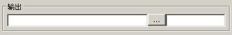
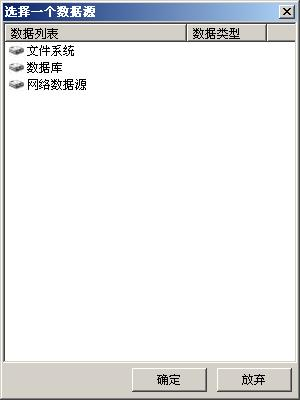

这个面板是控制输出的图层位置和名称。暂时只可以是一个图层。
它的主界面如下：

左边的编辑框是数据源。右边编辑框是新数据的名称。
中间的按钮是数据源选择窗口。点击它，会出现一个数据源选择对话框。

双击里面的项目，到了需要添加的项目下，点确定，就会在输出面板的左边编辑框中出现数据源路径。当然，现在这个数据源选择框要判断所有数据时候是gdal/ogr所认识的数据，判断过程相当耗时（需要耐心等待），且时常会出错。如果怕出问题，就不要使用这个对话框。直接在编辑框中书写有时是更好的一种办法。
另外网络数据源还未实现。数据库数据源依赖于配置目录下.dbconf文件的配置。如果没有配置，不妨用打开对话框来配置一下数据库的类型和具体配置。
右边的编辑框是新数据的名称。如果需要，则需要自己输入（左边编辑框通常不包括新数据的名字）
| geosings, 输出面板 | 返回主目 录 |